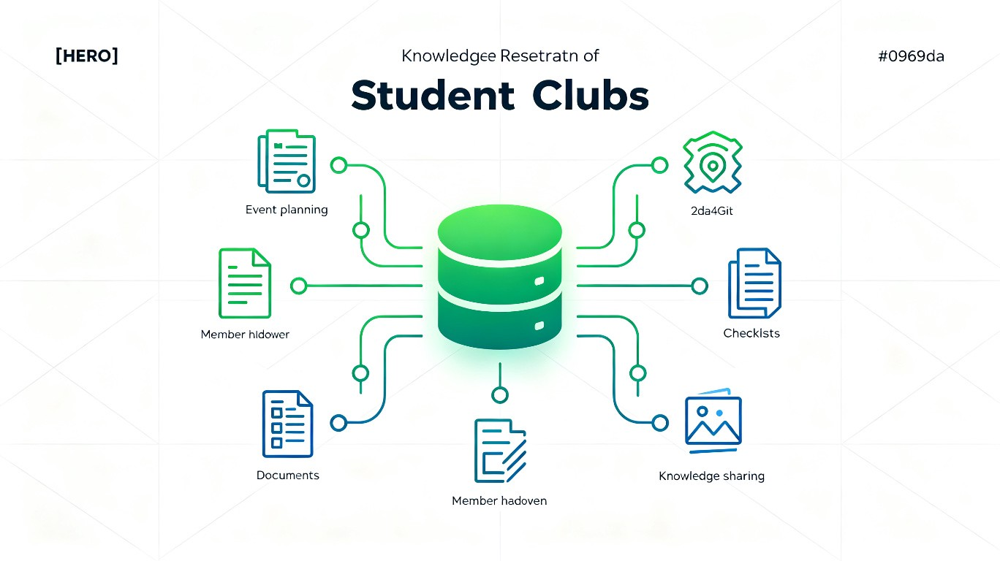
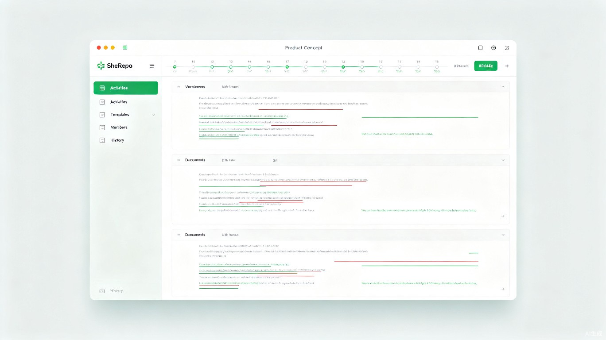

社库 SheRepo
SheRepo = Club + Repository
社团专属的 Git 式知识资产管家——把换届交接、活动协作、知识传承中散落的资料，用版本管理的方式统一沉淀、可追溯地流转。

痛点：社团知识的"归零重启"
每年社团换届都是一场"考古"——学长留下的资料版本混乱，新人接手时不知道哪份是最新的，踩过的坑也没沉淀下来。每一届都在重复造轮子。
资料散落各处
微信群、网盘、个人电脑、U盘……同一份策划案有七八个版本，散落在不同渠道，找不到、对不上。
版本无法追溯
文件名加日期的土办法——"策划案_最终版_真的最终版_v3.docx"。改坏了无法回滚，谁改的、改了啥都不清楚。
交接靠口口相传
换届交接全靠学长学姐口头叮嘱，经验随人走。上一届踩过的坑，下一届继续踩，毫无积累。
协作冲突频发
办活动时多人同时编辑，最后合并靠手动比对，冲突没法自动解决，效率低还容易出错。
方案：社库是什么
社库（SheRepo） 是一款专为高校社团设计的桌面客户端，把 Git 的版本管理理念搬进社团场景，为社团提供文档、资源、表单的统一仓库与版本管理能力。
核心理念
程序员用 Git 管理代码多年早已成熟，为什么社团知识资产不能享受同等的版本管理？社库把 Git 的 commit、branch、merge、diff、revert 等核心概念，翻译成社团成员能理解的协作语言，让每一次资料的演进都可追溯、可回滚、可传承。
一句话定位： 不是"又一个网盘"，而是"社团专属的 Git"——让社团知识资产像代码一样被严肃地版本化管理。
统一仓库
每个社团一个本地仓库，文档、资源、表单、经验帖分类管理，告别散落各处的混乱。
版本快照
每次提交都是一个不可变快照，随时回到任意历史版本，"改坏了"不再是噩梦。
差异对比
可视化 Diff 展示文档变更，谁改的、改了啥、何时改的，一目了然。
分支协作
活动策划走分支开发，主干保持稳定，合并时自动检测冲突，多人协作不再打架。
离线可用
本地优先架构，无网络也能正常工作，校园弱网环境下依然流畅。
数据自主
数据存在本地，社团完全掌控，不依赖第三方云服务，隐私和安全有保障。
核心机制：三维版本管理
换届交接、活动协作、知识传承看似三个不同场景，实则共享同一个核心机制——版本管理。社库把它们统一在一个产品里，从时间、空间、内容三个维度组织社团知识资产。
换届交接
每届结束自动封存"年度快照"，形成可回溯的社团编年史。交接时一键转移仓库所有权，新一届站在上一届的版本基础上继续。
活动协作
多人并发编辑走分支机制，主干保持稳定。策划案、分工表、物料清单的修改可 Diff、可 Review、可回滚，冲突自动检测。
知识传承
经验帖、复盘报告持续迭代，留下完整的演进轨迹。每一届踩过的坑成为下一届的起点，知识在版本树中沉淀生长。
flowchart LR
subgraph 时间["⏰ 时间维度 · 换届交接"]
A["第1届快照"] --> A2["第2届快照"] --> A3["第3届快照"] --> A4["第N届快照"]
end
subgraph 空间["📍 空间维度 · 活动协作"]
B1["活动A分支"] --> B2["合并主干"]
B3["活动B分支"] --> B2
B4["活动C分支"] --> B2
end
subgraph 内容["📝 内容维度 · 知识传承"]
C1["经验帖v1"] --> C2["经验帖v2"] --> C3["经验帖v3"]
end
A4 -.-> B2
B2 -.-> C3
差异化亮点
社库不只是把 Git 包了一层壳。针对社团场景，我们设计了两个独有的差异化亮点，让版本管理真正贴合社团的治理逻辑和使用习惯。
权限树
模拟社团真实组织架构的精细化权限系统，权限沿组织树继承，比普通"读写权限"更贴合社团治理逻辑。
- 角色：会长 / 部长 / 副部长 / 干事 / 交接人
- 权限沿组织树继承，部长自动拥有其下属干事的可读权限
- 换届交接时一键转移"仓库所有权"，权限随人走、随届变
- 支持"交接人"角色：只读 + 转移权，确保平稳过渡
模板市场
内置社团专用模板库，开箱即用，降低新人贡献门槛，让每一届都能站在标准化起点上。
- 活动策划案模板：标准化的活动立项流程
- 物资清单模板：避免漏项的标准采购表
- 招新报名表模板：一键生成结构化表单
- 复盘报告模板：让经验沉淀有章可循
- 模板本身也走版本管理，可持续迭代优化
flowchart TD
P["会长仓库 Owner"] --> O1["组织部 权限继承"]
P --> O2["宣传部 权限继承"]
P --> O3["外联部 权限继承"]
O1 --> M1["部长 读写"]
O2 --> M2["部长 读写"]
O3 --> M3["部长 读写"]
M1 --> D1["干事 只读"]
M1 --> D2["干事 只读"]
M2 --> D3["干事 只读"]
M3 --> D4["干事 只读"]
P --> H["交接人 只读+转移"]
H -.->|换届转移| P2["新会长 仓库 Owner"]
目标用户与场景
社库面向高校社团的核心成员——会长、部长、干事，以及每届换届的交接人与接手人。
典型用户画像
社团负责人 / 会长
痛点是换届交接——学长学姐留下的资料东一个西一个，版本混乱，新人接手时找不到、看不懂、改坏了没人知道。
活动组织者 / 部长
痛点是活动协作——策划案、物料清单、分工表在微信群里传来传去，最后谁的版本是最新的都不清楚。
跨届社团成员 / 干事
痛点是知识传承——每年新人都要重复踩坑，上一届踩过的坑、积累的经验没法系统化沉淀和"版本化"迭代。
使用时机： ① 换届交接时封存"年度快照"并移交仓库所有权；② 办活动时多人协作编辑策划案、分工表，随时回滚误改；③ 日常沉淀经验帖、活动复盘，让踩过的坑成为下一届的起点。
产品界面构想
桌面客户端采用三栏布局：左侧目录树展示社团仓库结构，中间主区域展示文档内容与 Diff 对比，右侧侧栏展示版本历史与分支信息。

价值与意义
效率提升
把社团从"每年归零重启"变成"持续积累迭代"。每届站在上一届的版本基础上继续，减少 60% 以上的重复踩坑和资料重建时间。版本管理让协作冲突从"手动比对"变成"自动检测"，活动筹备效率显著提升。
社会价值
让大学社团这种宝贵但易失的组织记忆得以留存，形成可回溯的校园文化编年史，促进知识在学生群体间的代际传承。每个社团的年度快照，也是校园文化发展的微观切片，具有长期的文化档案价值。
技术架构
采用 Python + PyQt 桌面客户端架构，本地调用 GitPython 实现"真·版本管理"，离线可用，数据自主可控。
技术选型
flowchart TB
subgraph UI["🎨 表现层 · PyQt6"]
U1["仓库浏览器"]
U2["文档编辑器"]
U3["Diff对比视图"]
U4["版本历史面板"]
end
subgraph Logic["⚙️ 业务层 · Python"]
L1["仓库管理"]
L2["权限树引擎"]
L3["模板市场"]
L4["快照封存"]
end
subgraph Core["💾 核心层 · GitPython"]
C1["Git引擎"]
C2["分支/合并"]
C3["提交/回滚"]
C4["Diff计算"]
end
subgraph Storage["📦 存储层 · 本地"]
S1["Git仓库"]
S2["SQLite元数据"]
S3["模板资源"]
end
UI --> Logic
Logic --> Core
Core --> Storage
架构优势： 本地优先，数据自主可控；GitPython 提供成熟稳定的版本管理能力；PyQt6 保证桌面端性能与原生体验；模块化设计便于后续扩展协作同步能力。